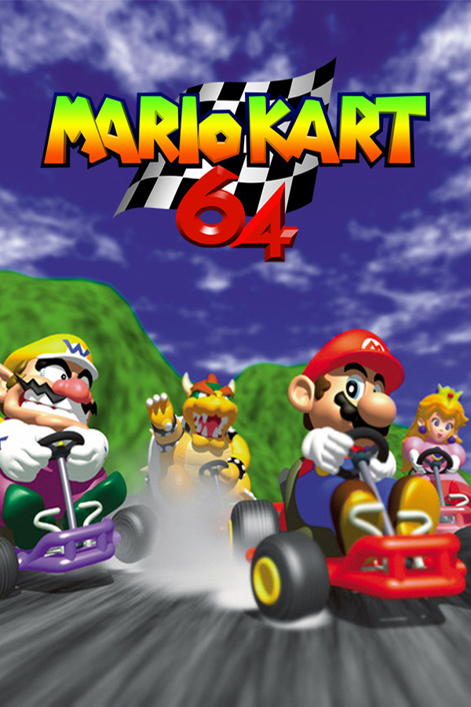

|  | |
| Playtime | Not Played |
| Last Activity | Never |
| Added | 4/29/2025 4:52:34 |
| Modified | 4/29/2025 23:42:20 |
| Completion Status | Not Played |
| Library | Playnite |
| Source | |
| Platform | Nintendo 64 |
| Release Date | 12/14/1996 |
| Community Score | |
| Critic Score | 83 |
| User Score | |
| Genre | Kart racing |
| Developer | Nintendo EAD |
| Publisher | Nintendo |
| Feature | Multiplayer Single Player |
| Links | Wikipedia Mario Kart 64 HQ Official website |
| Tag | [People] artist: Tadashi Sugiyama [People] composer: Kenta Nagata [People] director: Hideki Konno [People] producer: Shigeru Miyamoto [People] programmer: Masato Kimura |
Mario Kart 64 is a 1996 kart racing game for the Nintendo 64 (N64). It is the second installment in the Mario Kart series after 1992's Super Mario Kart. The game retains the gameplay of its predecessor: the player, controlling a Mario franchise character, races opponents around tracks based on locales from the Super Mario platform games. Tracks contain obstacles to slow the player down and item boxes which give the player power-ups to aid in their progress. Mario Kart 64 contains different single-player and local multiplayer game modes, including a Grand Prix racing mode and a last man standing battle mode.
Developed and published by Nintendo, Mario Kart 64 was first revealed in 1995 alongside the N64. The development team focused on utilising the N64's technology to create a smooth playing experience rather than deviating significantly from its predecessor's gameplay in order to appeal to a wide audience. Developers were bounded by the N64's processing power and made use of rendering techniques to save on memory, and used car physics simulations to aid the game's kart design. Nintendo released Mario Kart 64 in late 1996 in Japan and in 1997 worldwide, months after the launch of the N64.
Mario Kart 64 received acclaim from critics. The track designs, multiplayer, and presentation were lauded, while criticism was directed towards its technical issues and difficulty. The game has sold 9.87 million copies worldwide since its release, making it the second-bestselling N64 game. Mario Kart 64 was nominated for awards following its release, and retrospectively has been considered one of the greatest video games of all time. The game has a notable speedrunning presence online. Mario Kart 64 was rereleased digitally on the Wii in 2007, the Wii U in 2016, and the Nintendo Switch in 2021.
Mario Kart 64 is a kart racing video game featuring characters and elements from the Mario franchise largely similar in gameplay to its predecessor Super Mario Kart (1992). The player controls one of eight Mario franchise characters and races opponents in karts around tracks based on locales from the Super Mario platform games. The game's 20 courses are populated with obstacles to slow the player down, shortcuts letting the player skip sections, and boxes labeled with question marks which give the player a random item based on elements from the Super Mario series. Items can be either power-ups, such as giving the player a speed boost, or offensive, such as causing an opponent to spin out. The player can also drift around corners or enter an opponent's slipstream to receive a speed boost. Playable characters are divided into three weight classes which determine characteristics such as speed, acceleration, and handling. Princess Peach, Toad, and Yoshi are lightweights; Luigi and Mario are middleweights; and Bowser, Donkey Kong, and Wario are heavyweights. There are three difficulty levels based on engine classes—50cc, 100cc, or 150cc—, with the harder difficulties' more powerful engine classes providing increased maximum speeds and control difficulty.
There are two single-player game mode options in Mario Kart 64: Grand Prix (GP) and Time Trials. Time Trials is a solely single-player mode and GP can be played in single-player or with two players. In GP, the game's main mode, the player races seven computer opponents in one of four "cups" consisting of four tracks, with the objective of achieving the highest points across all four three-lap races. The player must race on every track in the cup, and points are given out at the end of each race based on position—nine for first place, six for second, three for third, and one for fourth. The player must come in at least fourth place in each race to continue racing for a trophy. Achieving highest points on all cups in the 150cc difficulty unlocks a "mirror" mode in which all tracks are flipped left-to-right. In Time Trials, the player races on any of the 16 tracks with the aim of achieving the lowest time across three laps. There are no opponents or items on the track; the player is given three speed boosts to use across the whole race. The player can race against another player's time by sharing "ghost" data using the Controller Pak, a memory card that plugs into the back of the Nintendo 64 (N64) controller.
Three local multiplayer modes are present in Mario Kart 64: GP, Versus (VS), and Battle. The game utilises a split screen to display each player's gameplay. GP is unchanged from its single-player version, but allows for two players. In VS mode, two to four players race around any track without computer opponents. Battle mode sees two to four players compete in one of four arenas rather than tracks. The player begins with three balloons over their character, with the objective of popping other players' balloons using items. Players are knocked out upon losing all their balloons—though can control a bomb with wheels to attack remaining players afterwards—, and the winner is whoever remains the last man standing.
The game was provisionally titled Super Mario Kart R during development—the "R" being short for "rendered". Mario Kart 64 was developed concurrently with Super Mario 64 (1996) and The Legend of Zelda: Ocarina of Time (1998) by Nintendo's Entertainment Analysis & Development division. The game was revealed alongside the N64 console itself in November 1995 at the Shoshinkai trade show via a videotape given out to journalists. The game was reportedly considered "95% complete" at the time of the show. Mario Kart 64 was intended to be released alongside the N64 itself in mid-1996 but became delayed as development resources were directed towards Super Mario 64, itself a launch title for the system.
Developers didn't focus on gameplay deviating significantly from its predecessor Super Mario Kart, wanting the game to appeal to a wide audience. Nintendo instead focused on the game's use of technology and internal processes, like making multiplayer gameplay performance smooth and generally using the full extent of the N64's processing capabilities. Hideki Konno, the director of Mario Kart 64, stated that developers wanted a racing environment in the game where all players were "in it until the end". Konno claimed that they weren't able to achieve this due to the processing capabilities of the N64 not allowing eight players on the screen at all times. Developers created a simulation of remote-controlled vehicles and did research on the physics of cars to aid in designing the game's kart mechanics. Ultimately, it was decided these kart mechanics were too "realistic" and unenjoyable for game testers, and developers settled on a more straightforward approach to controls in the final release. Game designers wanted freedom in regards to where the player can race on tracks. This caused programmers to struggle with collision detection, trying to find a balance between not overloading the processor and not wanting to cut corners such as by letting players overlap each other.
The game uses a rendering technique known as billboarding to represent characters. Characters are represented by a two-dimensional image kept perpendicular to the camera rather than being rendered in 3D. This technique allowed developers to save on memory—the game's Battle mode and ability to render eight players on the track at once were made possible by this. Producer Shigeru Miyamoto credited the game's technical performance to the N64's use of ROM cartridges over disc-based CD-ROMs for game media, due to the way they handle pre-loading data to the game system. During development, a hard disk failure resulted in designers remaking "about 80%" of the game's character models. An early alpha version of the game appeared in the Nintendo Gigaleak, a 2020 data leak of internal material at Nintendo. The alpha used assets from Super Mario Kart as placeholders. A pre-release version of the game originally featured Kamek, a villain in the Yoshi series, before being replaced by Donkey Kong. Other features cut during development include a racing game mode without items—scrapped due to disinterest from game testers—and two tracks. The cut tracks were based on a parking garage and a large city, respectively.
Mario Kart 64 was released in Japan on December 14, 1996, in the United States on February 10, 1997, and in Europe on June 24—the American release of the game was moved forward a week from the initially announced date. It was the second entry in the Mario Kart series after Super Mario Kart. Nintendo of America chairman Howard Lincoln stated that the difference in time between the Japanese and American releases of the game was due to the company's desire to release the game during the holiday season in Japan, considering a lack of N64 releases in the region. Nintendo released a special edition of Mario Kart 64 in Japan which came with a specially-styled black-and-grey N64 controller. It was released in China on December 25, 2003 on the iQue Player through the Chinese localization company iQue. Mario Kart 64 was digitally rereleased on the Wii and the Wii U through the Virtual Console, releasing on the Wii worldwide across January 2007. On the Wii U, the game released on January 21, 2016 in Europe and on December 29 in the United States. Mario Kart 64 was also rereleased on the Nintendo Switch as part of the Nintendo Classics service on October 25, 2021.
The Mario Kart 64 soundtrack, composed by Kenta Nagata, was released on CD several times across 1997 in Japan and the United States. The American releases were published by Nintendo on April 1, 1997 and March 1 respectively, and the Japanese release was published by Pony Canyon on September 19. The releases include the game's songs as well as different sound effects and remixes of songs from the game, and each includes a different track listing. Mario Kart 64 on Club Circuit, published by Tokuma Japan Communications [ja] on December 26, 1997, is a remix album containing club remixes of the game's soundtrack.
Mario Kart 64 received "generally favorable" reviews according to the review aggregator website Metacritic. The game was commercially successful, selling 9.87 million copies worldwide—the second-bestselling game on the N64. It was the highest selling game in the United States over the first three months of 1997, and reached over one million sales within two months of its release in the region. By 1999, Mario Kart 64 had sold 6.23 million copies in the United States and 2.06 million units in Japan, the highest and third-highest selling N64 game in those regions respectively.
Critics debated the game's presentation and visuals. Supporters felt the game adequately used the power of the N64, made the game stand out from others in the racing genre and in the Mario series, and was an improvement over its 16-bit predecessor. The French Officiel Nintendo Magazine enjoyed the game's colourful and fluid visuals, adding that its overall presentation likened a "magical" experience. Detractors of the graphics felt they lacked detail, weren't better enough than the previous 16-bit entry, and failed to fully benefit from the N64's power. The use of 2D sprites was a common critique, with Next Generation arguing that it made the game look outdated.
Mario Kart 64's track design and gameplay polarised critics. The game was panned for being un-innovative, too easy, and simple and monotonous. Computer and Video Games and N64 Magazine felt that success was too dependent on getting the right power-ups. Cubed3 disliked Mario Kart 64's wide, motorway-like track design, saying that it did not provide an "adrenaline filled" experience which the player might have hoped for. Critics also found fault in the game's use of rubberband difficulty balancing, recognizing that it gave the enemy artificial intelligence (AI) an unfair advantage. Technical issues such as poor collision detection and lag in the four-player "Battle Mode" were also noted.
The gameplay did have supporters, who noted its large amount of courses, found its track designs more detailed and impressive than Super Mario Kart, and thought it had a lot of replay value. Hyper and N64 Magazine highlighted the flexible turning control with the multiple-angled analog stick, calling it "perfect" and true to real-life karts. N64 Magazine enjoyed the amount of focus and fast reflexes demanded from the player. Hyper reported having many unexpected moments while playing the game due to its "ingeniously fiendish AI" and the boxes containing different power-ups each time they're collected. Reviewers, even those lukewarm towards the graphics, positively noted touches such as the 180-degree turns in Bowser's Castle, the train tracks on Kalimari Desert, the trucks in Toad's Turnpike, the cows in Moo Moo Farm, Peach's castle on Royal Raceway, and the sliding penguins in Sherbet Land as highlights, as well as smoke puffs coming out of the kart.
Critics found the multiplayer mode to be better than the single player, with IGN calling it "multi-player mayhem at its best". Game Informer described the game as "one of the best multiplayer games ever made", citing the game's vehicle dynamics and items as aiding the multiplayer experience. Some reviewers criticized the four-player split screen mode for making gameplay difficult to see due to the small size of quadrants, and GameFan noted a poor frame rate performance playing the multiplayer modes compared to single-player.
In 1998, Mario Kart 64 was nominated for Console Racing Game of the Year by the Academy of Interactive Arts and Sciences during the inaugural Interactive Achievement Awards. Electronic Gaming Monthly named it a runner-up for "Multiplayer Game of the Year" (behind Saturn Bomberman) at their 1997 Editors' Choice Awards.
Mario Kart 64 placed 17th in Official Nintendo Magazine's 100 greatest Nintendo games of all time and 49th in Electronic Gaming Monthly's 1997 list of the 100 best console games of all time. It has been placed by several reviewers on "greatest video games of all time" lists, including Entertainment Weekly, Polygon, Hyper, and Gameswelt.
Critics have been mixed in regards to the game's ranking on retrospective lists of the best Mario Kart games. Some critics praised it for defining the direction of the series, noting its utilisation of 3D graphics and expansion of local multiplayer content. Kotaku and Game Informer however believed Mario Kart 64 to fall short compared to other games in the series, with the former panning "empty" tracks and a less palatable art style. It has also been retrospectively described by some reviewers as one of the best N64 games, with IGN declaring the game's tracks to be "some of the most memorable" in the kart racing genre. The blue shell item, which directly targets the player in first place, was first introduced in Mario Kart 64. GameSpot's Steve Watts described the item as "synonymous with Mario Kart" and an icon of video game history, while The Guardian placed it on its list of the "11 greatest video game objects".
Mario Kart 64 has a significant speedrunning scene of players competing to set time records on the game's 16 tracks through separate Grand Prix, three lap, or single lap time rankings. Times are recorded on the unofficial Mario Kart 64 Players' Page website, which tracks records starting from 1997. A speedrunner named Daniel Burbank notably obtained all 32 time records at once in 2021, across both three lap and single lap competitions.